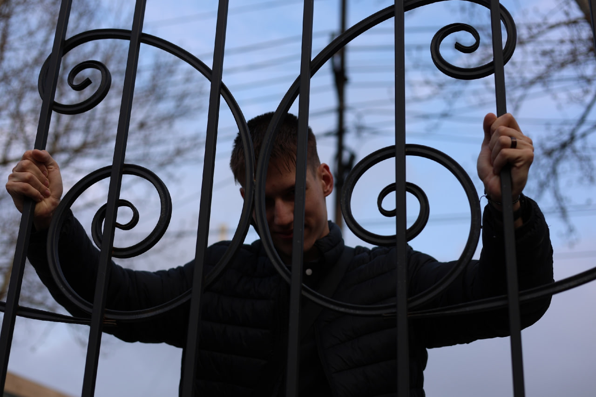
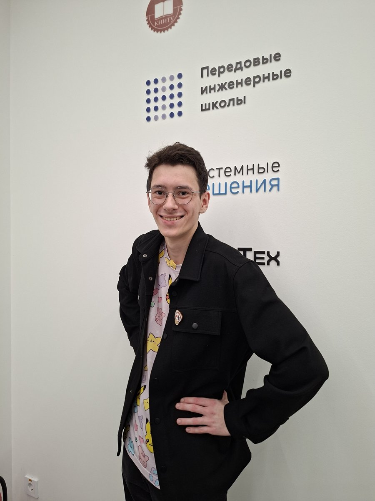
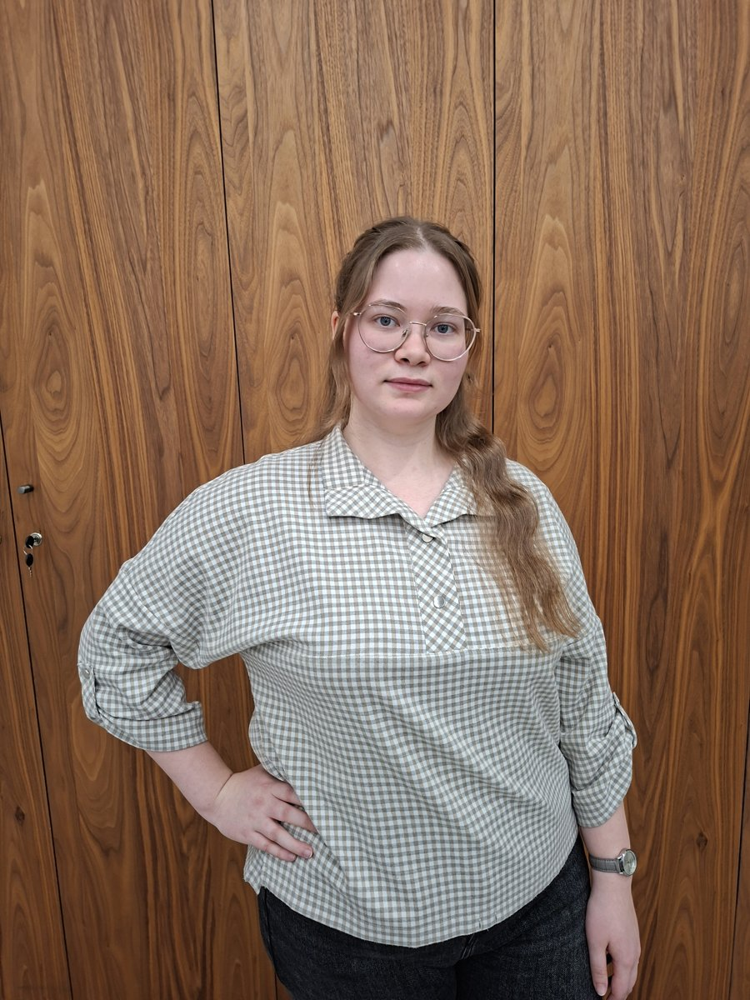

Капитан
Ильнур Рахматуллин
Учится в КНИТУ на направлении ИСТ, профиль DevOps. Координирует команду, распределяет задачи и сдаёт материалы.
КоординацияСдача работ
Собрали базовую версию сайта по образцу личного портфолио: тёмная и светлая темы, карточки, адаптивная сетка и плавные анимации при прокрутке. Каждый участник отвечает за свою зону, капитан сводит куски в один репозиторий и готовит полный комплект работ.
Все пятеро участников показаны на равных: карточки появляются попеременно слева и справа при спуске вниз. Наведите на фотографию, чтобы открыть её на весь экран.
Учится в КНИТУ на направлении ИСТ, профиль DevOps. Координирует команду, распределяет задачи и сдаёт материалы.

Учится в КНИТУ на направлении ИСТ, профиль DevOps. Пишет код сайта и мост к ИИ-агенту, собирает прототип.

Учится в КНИТУ на направлении ИСТ, профиль DevOps. Собирает финальные видео: склейка, переходы и оформление демонстрации.

Учится в КНИТУ на направлении ИСТ, профиль DevOps. Придумывает сценарий и ставит кадр для демонстрации и визитки.
Учится в КНИТУ на направлении ИСТ, профиль DevOps. Проверяет сайт на ошибки и сверяет решение с требованиями перед сдачей.
Короткий цикл: промт капитана, правка участника, проверка всей командой.
Капитан Ильнур распределяет задачи и формулирует промты.
Кирилл пишет код сайта и подключает ИИ-агента через мост.
Маша режиссирует видео, Андрей собирает финальный монтаж.
Никита проверяет целостность сайта, ссылки и соответствие требованиям.
Капитан сводит части и готовит репозиторий к сдаче.
До 27 ноября отправляем прототип, код, два видео и описание.
Использование ИИ раскрыто в соответствии с правилами хакатона: инструменты, цели, созданные элементы и проверка участниками указаны ниже и в README репозитория.
Три качества, которые мы заложили в решение: новый способ показать команду, собственная реализация и понятный путь дальнейшего роста.
Портфолио не просто показывает состав: при локальном запуске посетитель задаёт вопрос, фильтр отсекает всё не по теме, запрос уходит в текущую сессию ИИ-агента, а ответ возвращается в чат на странице.
Архитектуру, разметку, стили, анимации и мост команда собрала сама. ИИ применялся точечно для заготовок и раскрыт в README. Мост написан на стандартной библиотеке Python, без платных сервисов.
Мост легко расширить: база знаний команды, мультиязычный чат, подключение Telegram, журнал вопросов и ответов для разбора на защите и публичный API для других команд.
Конструктор заготовки: выберите участника, и список задач изменится под его зону. Получите промт в стиле нашей работы с ИИ и скопируйте его как шаблон.
Регистрация команды и материалы отборочного этапа.